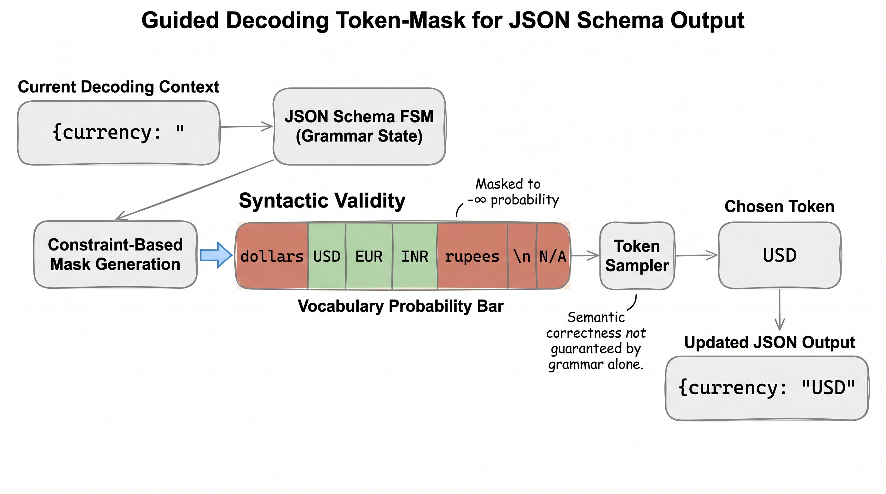
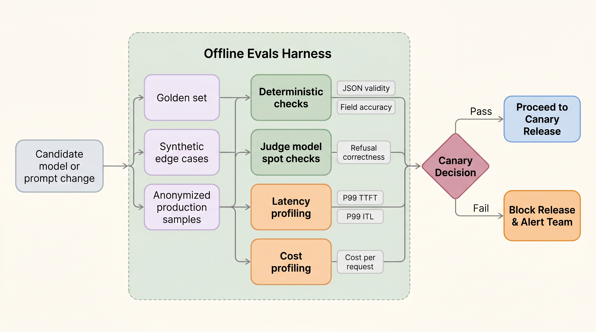

可靠性始于 token 边界。
当模型吐出流畅文本时，生产推理并没有完成。应用需要的是「契约」：合法的 JSON、安全的工具调用、稳定的字段、可度量的质量、有界的延迟，以及在用户察觉之前抓住回归的发布门槛。
结构化输出是 API 契约，而不是排版偏好。
如果模型在驱动一个工作流，下游系统消费的不是「漂亮的散文」，而是「值」。一个发票 agent 需要 total 这个数字；一个浏览器 agent 需要工具名与类型化参数；一个客服自动化需要分类枚举（enum）；一个写数据库的 agent 需要经过校验的字段。
仅靠 prompt 的契约
System:
Return JSON with invoice_id, total, currency.
Model:
Sure, here is the JSON:
{
invoice_id: INV-42,
total: "about twelve hundred",
currency: "dollars"
}
Schema 契约
{
"type": "object",
"required": ["invoice_id", "total", "currency"],
"properties": {
"invoice_id": {"type": "string"},
"total": {"type": "number"},
"currency": {"enum": ["USD", "EUR", "INR"]}
}
}
| 层级 | 保证 | 不保证 |
|---|---|---|
| Prompt 指令 | 模型被推向某种格式 | 合法性或一致性 |
| JSON 解析器 | 输出是可解析的 JSON | schema 或语义正确性 |
| JSON schema | 类型、必填字段、枚举 | 值是否真实 |
| 业务规则 | 领域约束 | 完整任务正确性 |
| 评测脚手架 | 跨样本度量行为 | 未来行为完美 |
引导解码把 schema 变成 token 掩码。
模型仍然会为词表中每个 token 生成 logit。引导解码改变的是采样器（sampler）。每一步，语法（grammar）、正则（regex）、JSON schema 或有限状态机（finite-state machine）会指出哪些 token 可以合法地作为下一个。非法 token 在采样前被屏蔽。

PaperBanana 图示：schema/FSM 约束以 token 掩码的形式流入采样器。
手动走查：currency 枚举
部分输出：{"currency": "。模型的原始 logit 可能更倾向 "dollars"，因为它是自然的英文。但 schema 说只有三个值是合法的。
| 方法 | 机制 | 最佳用途 | 取舍 |
|---|---|---|---|
| Logit 偏置（biasing） | 给选定 token 加减分数 | 偏好引导 | 软性，无保证 |
| JSON 模式 | 朝合法 JSON 偏置或约束 | 通用 JSON 响应 | 可能不强制精确 schema |
| 语法引导解码 | FSM/解析器屏蔽非法 token | 严格格式、类 SQL 语法、工具参数 | 采样器开销与实现复杂度 |
| 约束 beam/搜索 | 只搜索合法续写 | 小输出空间 | 可能比采样更慢 |
重试与修复循环有用，但可能掩盖糟糕的系统。
修复循环让模型去修正格式错误的输出。它能救回偶发失败，但如果修复率变成常态，你的产品就在为「第二次模型调用」付费，并掩盖了一次回归。
if parse_fails: repair_once_with_small_model() elif schema_fails: repair_once_with_error_message() elif semantic_check_fails: route_to_stronger_model_or_human_review() else: return result emit metrics: parse_failure_rate schema_failure_rate repair_rate repair_success_rate added_latency_ms
评测脚手架是「模型行为的 CI」。
单元测试说明「代码能跑」。评测说明「模型仍然按预期行事」。对结构化输出，脚手架必须同时测试「机器合法性」与「任务正确性」。

PaperBanana 图示：发布门槛把确定性检查、judge 检查、延迟画像与成本画像组合在一起。
最小评测记录
id: invoice_042 input: "raw OCR text from invoice..." expected: invoice_id: INV-2026-042 total: 1287.50 currency: USD risk_flags: ["late_fee"] checks: parse_json: true schema_valid: true exact.invoice_id: true numeric.total.abs_error <= 0.01 enum.currency: true contains.risk_flags: late_fee p99_latency_ms <= 1200 cost_per_1000_requests <= budget
金标集（Golden set）
少量、经过审阅、代表产品契约的样本。精确的字段级检查就放在这里。
合成边界集（Synthetic edge set）
生成的对抗性变体：缺失字段、异常日期、长上下文、多语言文本、格式错乱的表格。
生产回放（Production replay）
匿名化的流量样本。它能捕捉手工测试遗漏的分布漂移。
| 指标 | 定义 | 为什么重要 |
|---|---|---|
| JSON 合法性 | 可解析 JSON / 总输出 | 应用无法消费格式错误的输出 |
| Schema 合法性 | schema 合法输出 / 可解析输出 | 类型与必填字段成立 |
| 字段准确率 | 正确字段 / 期望字段 | 业务正确性 |
| 修复率 | 需要修复的输出 / 总输出 | 隐藏成本与可靠性信号 |
| 拒答正确性 | 正确拒绝或遵从 / 策略样本 | 安全与助人的平衡 |
| 延迟画像 | 按阶段的 P50/P90/P99 | 防止质量摧毁 SLO |
LLM 评判器只有在「框定好」时才有用。
当精确检查不可行时，judge 模型可以为语义打分，但它们不是魔法真相机。它们需要评分细则（rubric）、校准（calibration）、分歧处理与抽查。
糟糕的 judge prompt
Is this answer good? Return yes or no.
这太模糊。它会漂移、过度奖励啰嗦，并且无法暴露究竟是哪个行为回归了。
更好的 judge 评分细则
Grade from 0-2 for each: 1. all required fields present 2. values supported by source text 3. no unsupported risk flags 4. no unsafe advice Return JSON with scores and evidence spans.
judge 的输出本身是结构化且可审计的。
对整个结构化输出系统做基准测试。
结构化输出会改变延迟。引导解码可能拖慢采样。校验增加了后处理。修复增加了额外调用。要对整个流水线做基准，而不只是模型的 tokens/sec。
| 基准切片 | 要回答的问题 |
|---|---|
| 无约束 | 基线质量与延迟 |
| JSON schema / 引导解码 | 合法性收益 vs 采样器开销 |
| schema + 校验器 | 端到端应用契约 |
| schema + 修复 | 尾延迟与隐藏成本 |
| 候选模型 vs 基线 | 发布决策 |
发布门槛把质量与生产绑定在一起。
release_gate(candidate): require json_validity >= 99.9% require schema_validity >= 99.5% require field_accuracy >= baseline - 0.5% require refusal_correctness >= baseline require repair_rate <= baseline + 1% require p99_ttft <= baseline * 1.10 require p99_total_latency <= baseline * 1.15 require cost_per_request <= baseline * 1.15 require canary_rollback_ready == true
本节要点
结构化输出与评测属于推理工程，因为它们改变了「解码如何运行」「延迟如何度量」「部署如何设门槛」以及「失败如何排查」。一个很快、却返回非法工具调用的模型，不是一个生产系统。